ISE 软件¶
ISE¶
新建工程
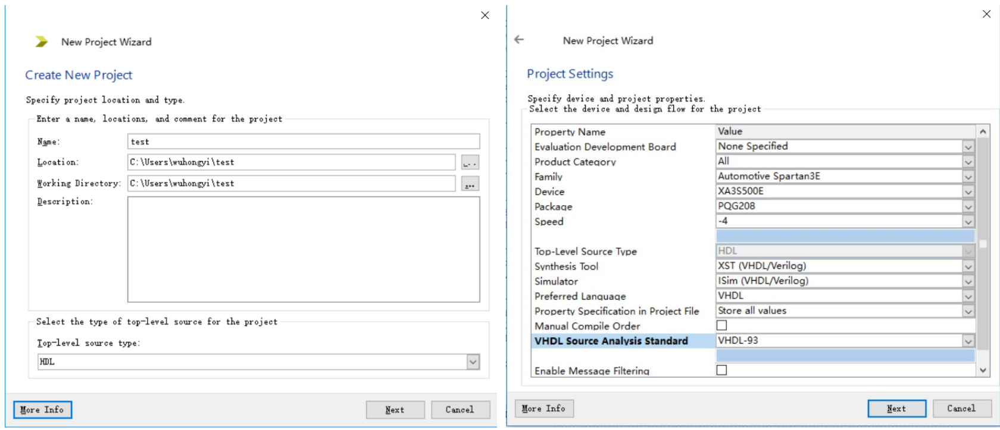右键 New Source 建立 Top Module
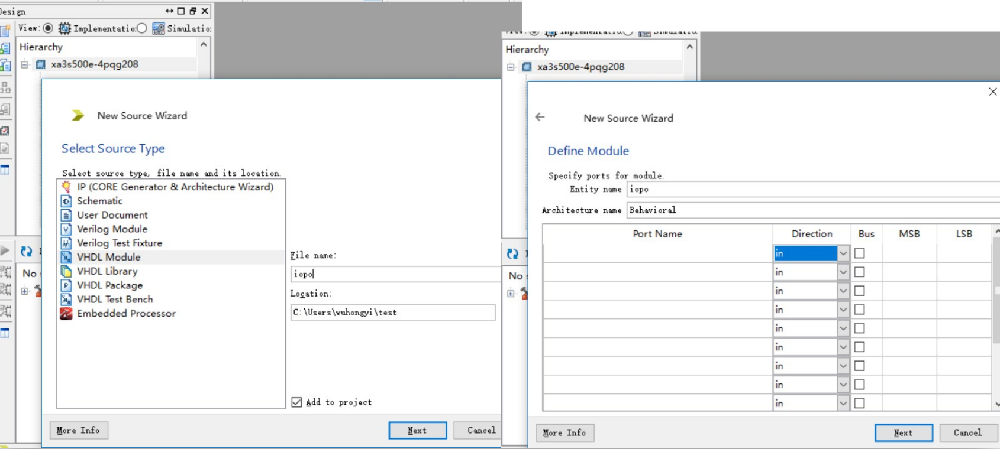右键 New Source 建立约束文件
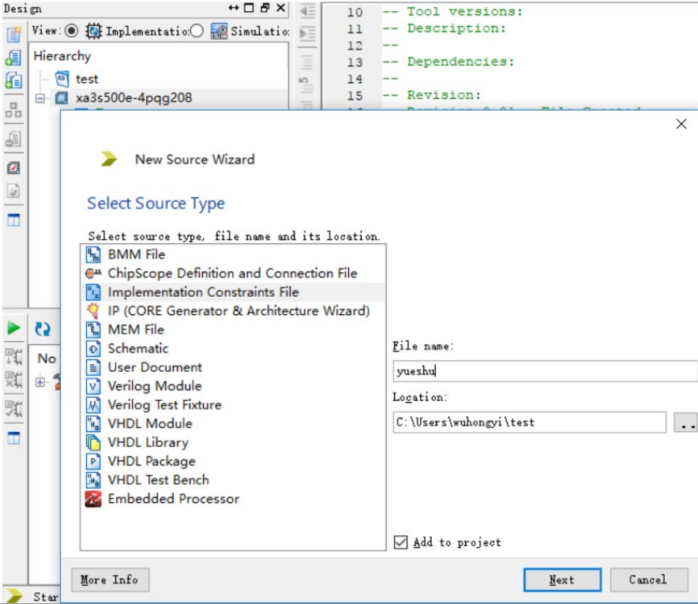 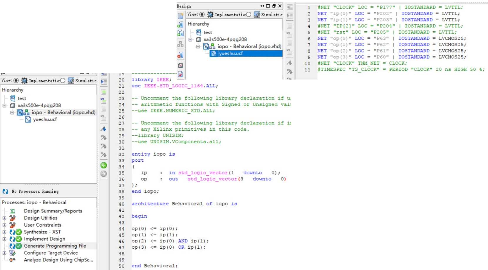编译生成 xxx.bit 文件
选中主程序
在下方的Generate Programming File
右键选择Rerun All
等待完成或者报错
刷新固件
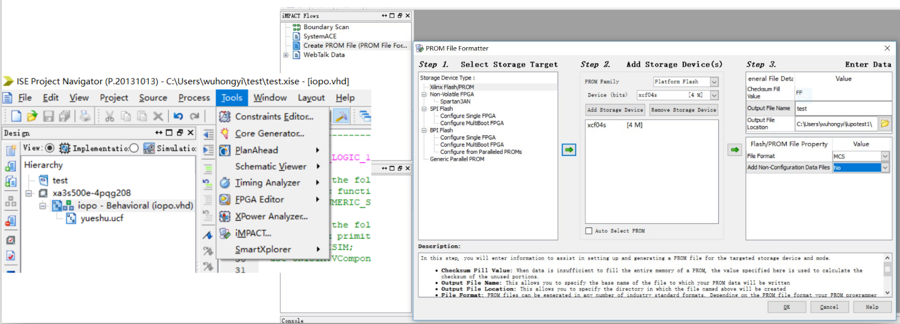Add a device? -> OK
选择之前生成的 xxx.bit 文件
Any other device? -> No
MSC
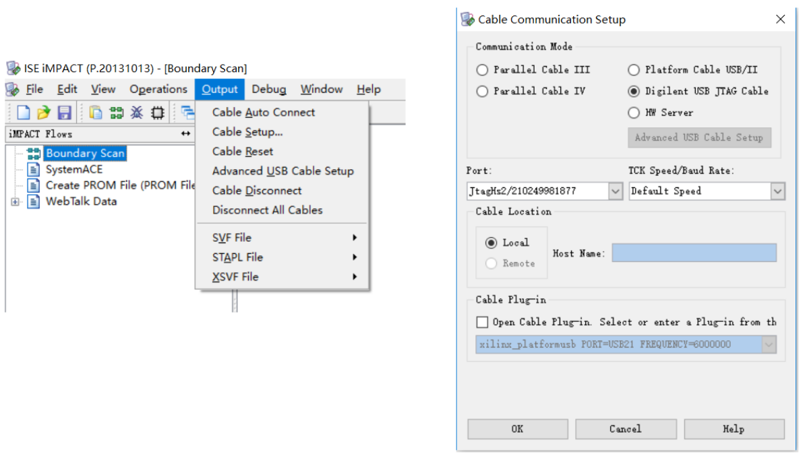 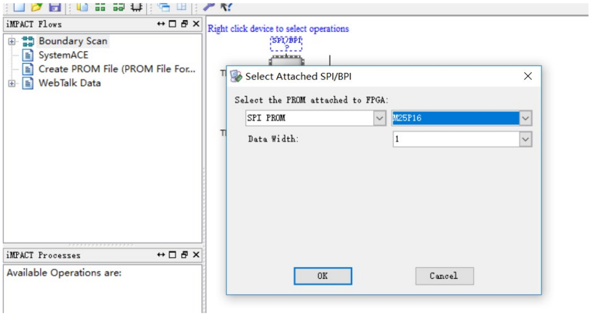 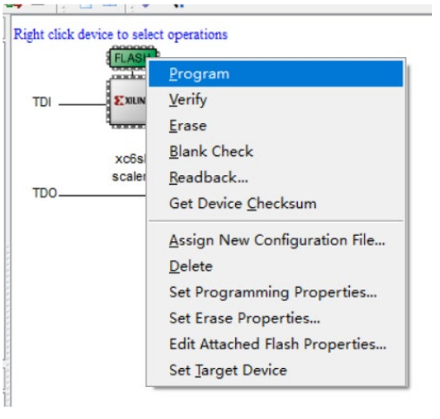IP 核¶
CLOCK
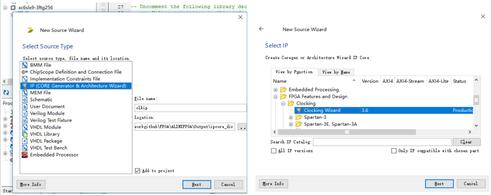 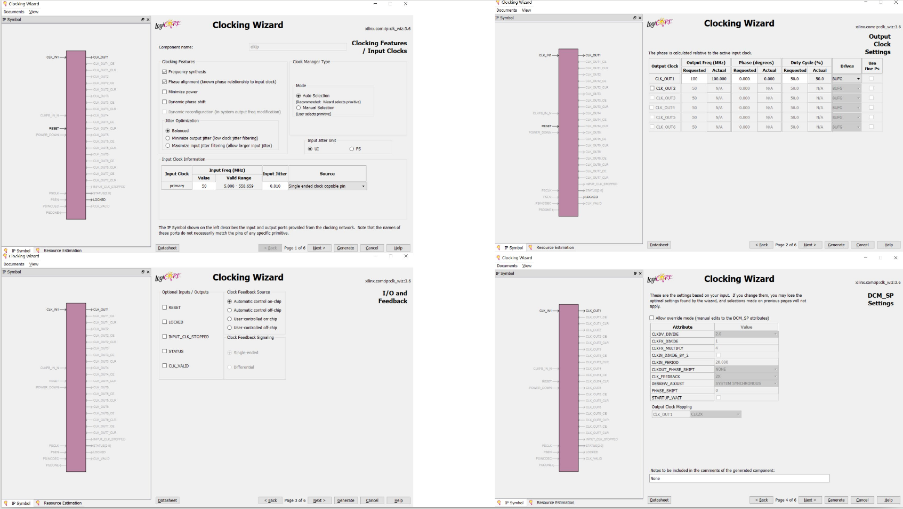 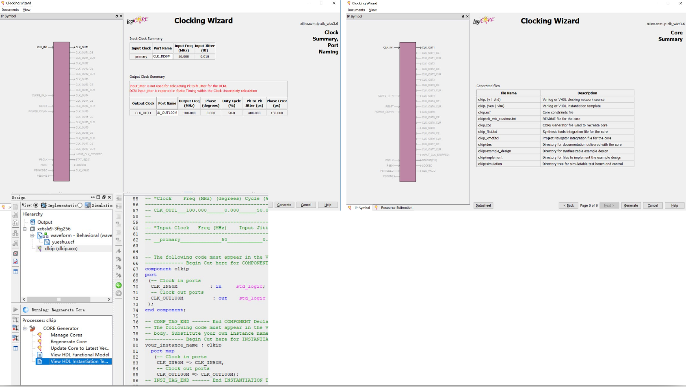ROM
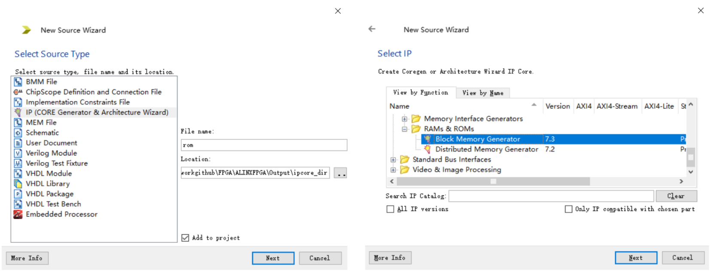 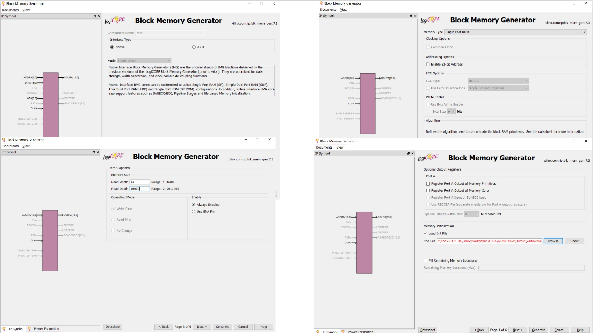 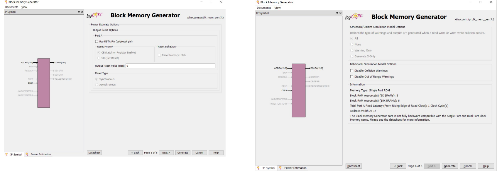FIFO
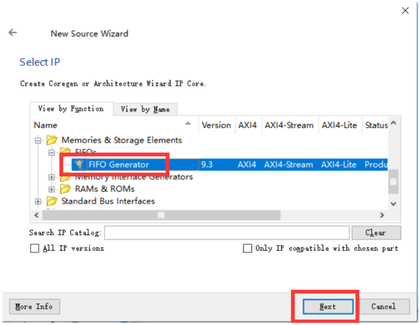http://www.eefocus.com/guoke1993102/blog/15-06/313183_36284.html
ISim¶
zheli
chipscope¶
zheli